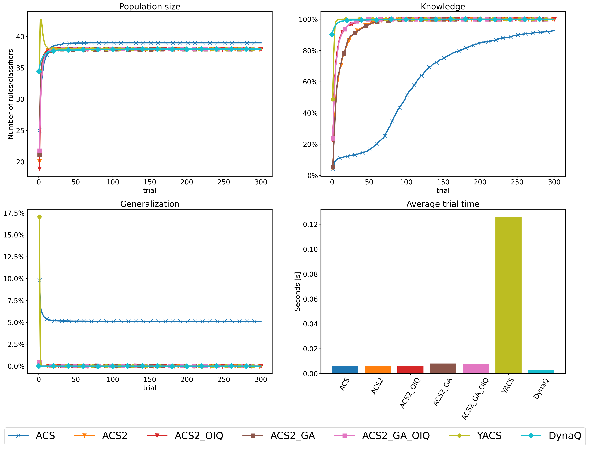
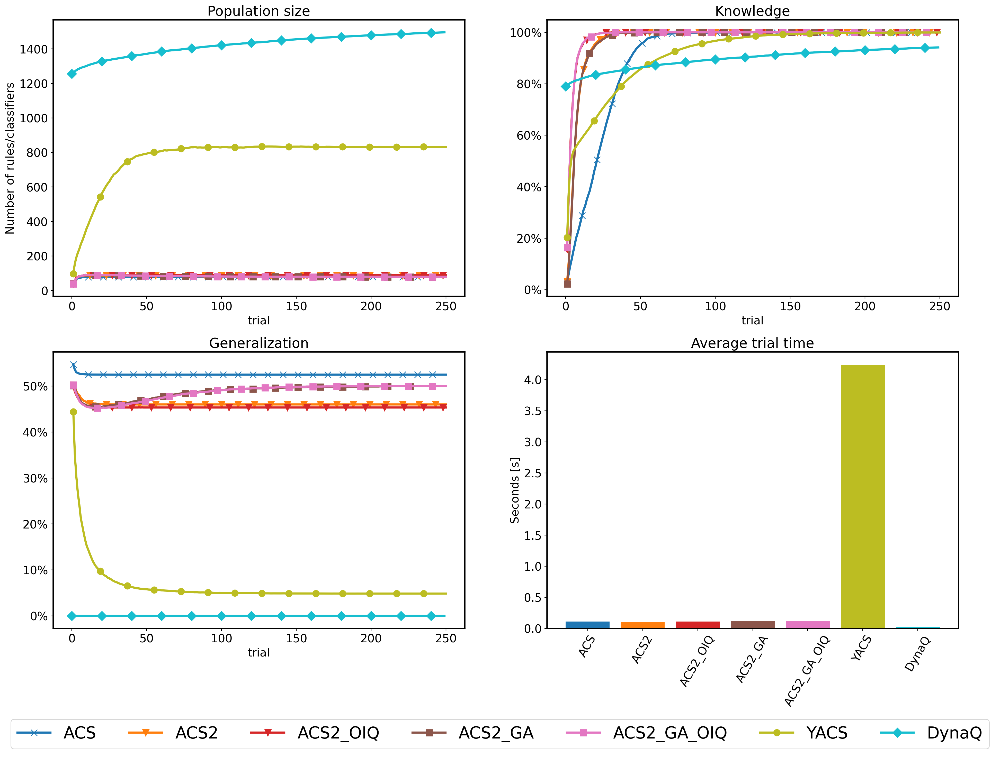

Experiment 4 - Multistep environments
Contents
import pathlib
import gym
import gym_corridor # noqa: F401
import gym_grid # noqa: F401
from lcs import Perception
from src.decorators import repeat, get_from_cache_or_run
from src.discretized_experiments import *
from src.observation_wrappers import CorridorObservationWrapper
plt.ioff() # turn off interactive plotting
plt.style.use('../../../src/phd.mplstyle')
cache_dir = f'{pathlib.Path().absolute()}/cache'
plot_dir = f'{pathlib.Path().absolute()}/plots'
def generalization_score(pop):
# Compute proportion of wildcards in classifier condition across all classifiers
wildcards = sum(1 for cl in pop for cond in cl.condition if
cond == '#' or (hasattr(cond, 'symbol') and cond.symbol == '#'))
all_symbols = sum(len(cl.condition) for cl in pop)
return wildcards / all_symbols
Experiment 4 - Multistep environments¶
NUM_EXPERIMENTS = 50
USE_RAY = True
Corridor¶
corridor = gym.make('corridor-20-v0')
def corridor_knowledge(pop, env):
transitions = env.env.get_transitions()
reliable = [c for c in pop if c.is_reliable()]
nr_correct = 0
for start, action, end in transitions:
p0 = Perception((str(start),))
p1 = Perception((str(end),))
if any(
[True for cl in reliable if cl.predicts_successfully(p0, action, p1)]):
nr_correct += 1
return nr_correct / len(transitions)
def corridor_metrics_collect(agent, env):
population = agent.population
return {
'pop': len(population),
'knowledge': corridor_knowledge(population, env),
'generalization': generalization_score(population)
}
# DynaQ helpers
def dynaq_corridor_knowledge_calculator(model, env):
transitions = env.env.get_transitions()
nr_correct = 0
for (s0, a, s1) in transitions:
if s0 in model and a in model[s0] and model[s0][a][0] == s1:
nr_correct += 1
return nr_correct / len(transitions)
common_params = {
'classifier_length': 1,
'possible_actions': 2,
'learning_rate': 0.1,
'metrics_trial_freq': 1,
'metrics_fcn': corridor_metrics_collect,
'trials': 300
}
yacs_params = {
'trace_length': 3,
'estimate_expected_improvements': False,
'feature_possible_values': [set(str(i) for i in range(19)), ]
}
dynaq_params = {
'q_init': np.zeros((corridor.env.observation_space.n, 2)),
'model_init': {},
'perception_to_state_mapper': lambda p: int(p),
'knowledge_fcn': dynaq_corridor_knowledge_calculator,
'epsilon': 0.5
}
class CorridorStateWrapper(gym.ObservationWrapper):
def observation(self, obs):
assert len(obs) == 1
return int(obs[0])
@get_from_cache_or_run(cache_path=f'{cache_dir}/discretized/corridor/acs.dill')
@repeat(num_times=NUM_EXPERIMENTS, use_ray=USE_RAY)
def run_corridor_with_acs():
return single_acs_experiment(
env_provider=lambda: CorridorObservationWrapper(corridor),
trials=common_params['trials'],
classifier_length=common_params['classifier_length'],
possible_actions=common_params['possible_actions'],
learning_rate=common_params['learning_rate'],
metrics_trial_freq=common_params['metrics_trial_freq'],
metrics_fcn=common_params['metrics_fcn'])
@get_from_cache_or_run(cache_path=f'{cache_dir}/discretized/corridor/acs2.dill')
@repeat(num_times=NUM_EXPERIMENTS, use_ray=USE_RAY)
def run_corridor_with_acs2():
return single_acs2_experiment(
env_provider=lambda: CorridorObservationWrapper(corridor),
trials=common_params['trials'],
classifier_length=common_params['classifier_length'],
possible_actions=common_params['possible_actions'],
learning_rate=common_params['learning_rate'],
do_ga=False,
initial_q=0.5,
metrics_trial_freq=common_params['metrics_trial_freq'],
metrics_fcn=common_params['metrics_fcn']
)
@get_from_cache_or_run(cache_path=f'{cache_dir}/discretized/corridor/acs2_oiq.dill')
@repeat(num_times=NUM_EXPERIMENTS, use_ray=USE_RAY)
def run_corridor_with_acs2_oiq():
return single_acs2_experiment(
env_provider=lambda: CorridorObservationWrapper(corridor),
trials=common_params['trials'],
classifier_length=common_params['classifier_length'],
possible_actions=common_params['possible_actions'],
learning_rate=common_params['learning_rate'],
do_ga=False,
initial_q=0.8,
metrics_trial_freq=common_params['metrics_trial_freq'],
metrics_fcn=common_params['metrics_fcn']
)
@get_from_cache_or_run(cache_path=f'{cache_dir}/discretized/corridor/acs2_ga.dill')
@repeat(num_times=NUM_EXPERIMENTS, use_ray=USE_RAY)
def run_corridor_with_acs2_ga():
return single_acs2_experiment(
env_provider=lambda: CorridorObservationWrapper(corridor),
trials=common_params['trials'],
classifier_length=common_params['classifier_length'],
possible_actions=common_params['possible_actions'],
learning_rate=common_params['learning_rate'],
do_ga=True,
initial_q=0.5,
metrics_trial_freq=common_params['metrics_trial_freq'],
metrics_fcn=common_params['metrics_fcn']
)
@get_from_cache_or_run(cache_path=f'{cache_dir}/discretized/corridor/acs2_ga_oiq.dill')
@repeat(num_times=NUM_EXPERIMENTS, use_ray=USE_RAY)
def run_corridor_with_acs2_ga_oiq():
return single_acs2_experiment(
env_provider=lambda: CorridorObservationWrapper(corridor),
trials=common_params['trials'],
classifier_length=common_params['classifier_length'],
possible_actions=common_params['possible_actions'],
learning_rate=common_params['learning_rate'],
do_ga=True,
initial_q=0.8,
metrics_trial_freq=common_params['metrics_trial_freq'],
metrics_fcn=common_params['metrics_fcn']
)
@get_from_cache_or_run(cache_path=f'{cache_dir}/discretized/corridor/yacs.dill')
@repeat(num_times=NUM_EXPERIMENTS, use_ray=USE_RAY)
def run_corridor_with_yacs():
return single_yacs_experiment(
env_provider=lambda: CorridorObservationWrapper(corridor),
trials=common_params['trials'],
classifier_length=common_params['classifier_length'],
possible_actions=common_params['possible_actions'],
learning_rate=common_params['learning_rate'],
trace_length=yacs_params['trace_length'],
estimate_expected_improvements=yacs_params['estimate_expected_improvements'],
feature_possible_values=yacs_params['feature_possible_values'],
metrics_trial_freq=common_params['metrics_trial_freq'],
metrics_fcn=common_params['metrics_fcn']
)
@get_from_cache_or_run(cache_path=f'{cache_dir}/discretized/corridor/dynaq.dill')
@repeat(num_times=NUM_EXPERIMENTS, use_ray=USE_RAY)
def run_corridor_with_dynaq():
return single_dynaq_experiment(
env_provider=lambda: CorridorStateWrapper(CorridorObservationWrapper(corridor)),
trials=common_params['trials'],
q_init=dynaq_params['q_init'],
model_init=dynaq_params['model_init'],
epsilon=dynaq_params['epsilon'],
learning_rate=common_params['learning_rate'],
knowledge_fcn=dynaq_params['knowledge_fcn'],
metrics_trial_freq=common_params['metrics_trial_freq']
)
# Run computations
corridor_acs_runs = run_corridor_with_acs()
corridor_acs2_runs = run_corridor_with_acs2()
corridor_acs2_oiq_runs = run_corridor_with_acs2_oiq()
corridor_acs2_ga_runs = run_corridor_with_acs2_ga()
corridor_acs2_ga_oiq_runs = run_corridor_with_acs2_ga_oiq()
corridor_yacs_runs = run_corridor_with_yacs()
corridor_dynaq_runs = run_corridor_with_dynaq()
# Collect metrics to single dataframe
corridor_metrics_df = pd.concat([
*[parse_lcs_metrics('acs', metrics) for _, metrics in corridor_acs_runs],
*[parse_lcs_metrics('acs2', metrics) for _, metrics in corridor_acs2_runs],
*[parse_lcs_metrics('acs2_oiq', metrics) for _, metrics in corridor_acs2_oiq_runs],
*[parse_lcs_metrics('acs2_ga', metrics) for _, metrics in corridor_acs2_ga_runs],
*[parse_lcs_metrics('acs2_ga_oiq', metrics) for _, metrics in corridor_acs2_ga_oiq_runs],
*[parse_lcs_metrics('yacs', metrics) for _, metrics in corridor_yacs_runs],
*[parse_dyna_metrics('dynaq', metrics) for _, _, metrics in corridor_dynaq_runs],
])
corridor_metrics_df.set_index(['agent', 'trial'], inplace=True)
# Average them by agent and trial
corridor_metrics_averaged_df = corridor_metrics_df.groupby(['agent', 'trial']).mean()
# Plot results
plot_comparison(corridor_metrics_averaged_df, plot_filename=f'{plot_dir}/corridor_discretized_performance.png')
/home/arc/Projects/pwr/phd/src/discretized_experiments.py:221: UserWarning: FixedFormatter should only be used together with FixedLocator
axs[1, 1].set_xticklabels(labels, rotation=60)

Fig. 3.10 Performance of discretized Corridor¶
Grid¶
def grid_env_provider():
import gym_grid # noqa: F401
grid = gym.make('grid-20-v0')
grid._max_episode_steps = 250
return grid
grid = grid_env_provider()
grid_transitions = grid.env._transitions
unique_states = set()
for (s0, a, s1) in grid_transitions:
unique_states.add(s0)
unique_states.add(s1)
grid_state_mapping = {idx: s for idx, s in enumerate(unique_states)}
# LCS helpers
def grid_knowledge(population, env):
transitions = env.env.get_transitions()
reliable = [c for c in population if c.is_reliable()]
nr_correct = 0
for start, action, end in transitions:
p0 = Perception([str(el) for el in start])
p1 = Perception([str(el) for el in end])
if any([True for cl in reliable if cl.predicts_successfully(p0, action, p1)]):
nr_correct += 1
return nr_correct / len(transitions)
def grid_metrics_collector(agent, env):
population = agent.population
return {
'pop': len(population),
'knowledge': grid_knowledge(population, env),
'generalization': generalization_score(population)
}
# DynaQ helpers
def grid_perception_to_int(p0):
p0m = tuple(map(int, p0))
return list(grid_state_mapping.keys())[list(grid_state_mapping.values()).index(p0m)]
class GridStateWrapper(gym.ObservationWrapper):
def observation(self, obs):
return grid_perception_to_int(obs)
def grid_dynaq_env_provider():
return GridStateWrapper(grid_env_provider())
def dynaq_grid_knowledge_calculator(model, env):
all_transitions = 0
nr_correct = 0
for p0, a, p1 in grid_transitions:
s0 = grid_perception_to_int(p0)
s1 = grid_perception_to_int(p1)
all_transitions += 1
if s0 in model and a in model[s0] and model[s0][a][0] == s1:
nr_correct += 1
return nr_correct / all_transitions
common_params = {
'classifier_length': 2,
'possible_actions': 4,
'learning_rate': 0.1,
'metrics_trial_freq': 1,
'metrics_fcn': grid_metrics_collector,
'trials': 250
}
yacs_params = {
'trace_length': 3,
'estimate_expected_improvements': False,
'feature_possible_values': [
set(str(i) for i in range(20)),
set(str(i) for i in range(20))
]
}
dynaq_params = {
'q_init': np.zeros((len(grid_state_mapping), 4)),
'model_init': {},
'perception_to_state_mapper': grid_perception_to_int,
'knowledge_fcn': dynaq_grid_knowledge_calculator,
'epsilon': 0.5,
}
@get_from_cache_or_run(cache_path=f'{cache_dir}/discretized/grid/acs.dill')
@repeat(num_times=NUM_EXPERIMENTS, use_ray=USE_RAY)
def run_grid_with_acs():
return single_acs_experiment(
env_provider=grid_env_provider,
trials=common_params['trials'],
classifier_length=common_params['classifier_length'],
possible_actions=common_params['possible_actions'],
learning_rate=common_params['learning_rate'],
metrics_trial_freq=common_params['metrics_trial_freq'],
metrics_fcn=common_params['metrics_fcn'])
@get_from_cache_or_run(cache_path=f'{cache_dir}/discretized/grid/acs2.dill')
@repeat(num_times=NUM_EXPERIMENTS, use_ray=USE_RAY)
def run_grid_with_acs2():
return single_acs2_experiment(
env_provider=grid_env_provider,
trials=common_params['trials'],
classifier_length=common_params['classifier_length'],
possible_actions=common_params['possible_actions'],
learning_rate=common_params['learning_rate'],
do_ga=False,
initial_q=0.5,
metrics_trial_freq=common_params['metrics_trial_freq'],
metrics_fcn=common_params['metrics_fcn']
)
@get_from_cache_or_run(cache_path=f'{cache_dir}/discretized/grid/acs2_oiq.dill')
@repeat(num_times=NUM_EXPERIMENTS, use_ray=USE_RAY)
def run_grid_with_acs2_oiq():
return single_acs2_experiment(
env_provider=grid_env_provider,
trials=common_params['trials'],
classifier_length=common_params['classifier_length'],
possible_actions=common_params['possible_actions'],
learning_rate=common_params['learning_rate'],
do_ga=False,
initial_q=0.8,
metrics_trial_freq=common_params['metrics_trial_freq'],
metrics_fcn=common_params['metrics_fcn']
)
@get_from_cache_or_run(cache_path=f'{cache_dir}/discretized/grid/acs2_ga.dill')
@repeat(num_times=NUM_EXPERIMENTS, use_ray=USE_RAY)
def run_grid_with_acs2_ga():
return single_acs2_experiment(
env_provider=grid_env_provider,
trials=common_params['trials'],
classifier_length=common_params['classifier_length'],
possible_actions=common_params['possible_actions'],
learning_rate=common_params['learning_rate'],
do_ga=True,
initial_q=0.5,
metrics_trial_freq=common_params['metrics_trial_freq'],
metrics_fcn=common_params['metrics_fcn']
)
@get_from_cache_or_run(cache_path=f'{cache_dir}/discretized/grid/acs2_ga_oiq.dill')
@repeat(num_times=NUM_EXPERIMENTS, use_ray=USE_RAY)
def run_grid_with_acs2_ga_oiq():
return single_acs2_experiment(
env_provider=grid_env_provider,
trials=common_params['trials'],
classifier_length=common_params['classifier_length'],
possible_actions=common_params['possible_actions'],
learning_rate=common_params['learning_rate'],
do_ga=True,
initial_q=0.8,
metrics_trial_freq=common_params['metrics_trial_freq'],
metrics_fcn=common_params['metrics_fcn']
)
@get_from_cache_or_run(cache_path=f'{cache_dir}/discretized/grid/yacs.dill')
@repeat(num_times=NUM_EXPERIMENTS, use_ray=USE_RAY)
def run_grid_with_yacs():
return single_yacs_experiment(
env_provider=grid_env_provider,
trials=common_params['trials'],
classifier_length=common_params['classifier_length'],
possible_actions=common_params['possible_actions'],
learning_rate=common_params['learning_rate'],
trace_length=yacs_params['trace_length'],
estimate_expected_improvements=yacs_params['estimate_expected_improvements'],
feature_possible_values=yacs_params['feature_possible_values'],
metrics_trial_freq=common_params['metrics_trial_freq'],
metrics_fcn=common_params['metrics_fcn']
)
@get_from_cache_or_run(cache_path=f'{cache_dir}/discretized/grid/dynaq.dill')
@repeat(num_times=NUM_EXPERIMENTS, use_ray=USE_RAY)
def run_grid_with_dynaq():
return single_dynaq_experiment(
env_provider=grid_dynaq_env_provider,
trials=common_params['trials'],
q_init=dynaq_params['q_init'],
model_init=dynaq_params['model_init'],
epsilon=dynaq_params['epsilon'],
learning_rate=common_params['learning_rate'],
knowledge_fcn=dynaq_params['knowledge_fcn'],
metrics_trial_freq=common_params['metrics_trial_freq']
)
# Run computations
grid_acs_runs = run_grid_with_acs()
grid_acs2_runs = run_grid_with_acs2()
grid_acs2_oiq_runs = run_grid_with_acs2_oiq()
grid_acs2_ga_runs = run_grid_with_acs2_ga()
grid_acs2_ga_oiq_runs = run_grid_with_acs2_ga_oiq()
grid_yacs_runs = run_grid_with_yacs()
grid_dynaq_runs = run_grid_with_dynaq()
# Collect metrics to single dataframe
grid_metrics_df = pd.concat([
*[parse_lcs_metrics('acs', metrics) for _, metrics in grid_acs_runs],
*[parse_lcs_metrics('acs2', metrics) for _, metrics in grid_acs2_runs],
*[parse_lcs_metrics('acs2_oiq', metrics) for _, metrics in grid_acs2_oiq_runs],
*[parse_lcs_metrics('acs2_ga', metrics) for _, metrics in grid_acs2_ga_runs],
*[parse_lcs_metrics('acs2_ga_oiq', metrics) for _, metrics in grid_acs2_ga_oiq_runs],
*[parse_lcs_metrics('yacs', metrics) for _, metrics in grid_yacs_runs],
*[parse_dyna_metrics('dynaq', metrics) for _, _, metrics in grid_dynaq_runs],
])
grid_metrics_df.set_index(['agent', 'trial'], inplace=True)
# Average them by agent and trial
grid_metrics_averaged_df = grid_metrics_df.groupby(['agent', 'trial']).mean()
# Plot results
plot_comparison(grid_metrics_averaged_df, plot_filename=f'{plot_dir}/grid_discretized_performance.png')
/home/arc/Projects/pwr/phd/src/discretized_experiments.py:221: UserWarning: FixedFormatter should only be used together with FixedLocator
axs[1, 1].set_xticklabels(labels, rotation=60)

Fig. 3.11 Performance of discretized Grid¶